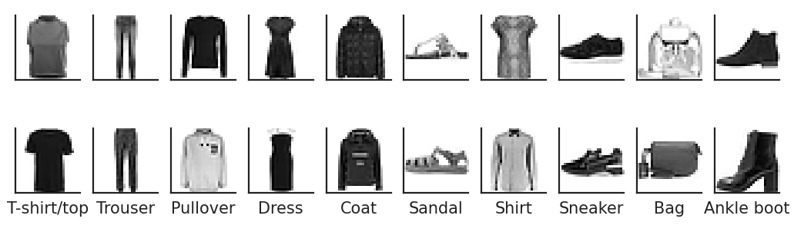
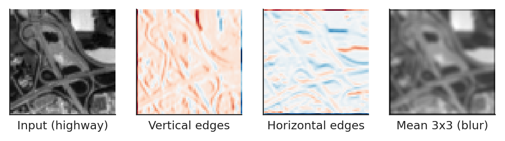
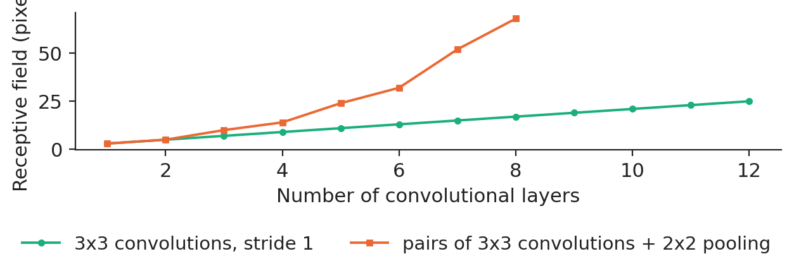
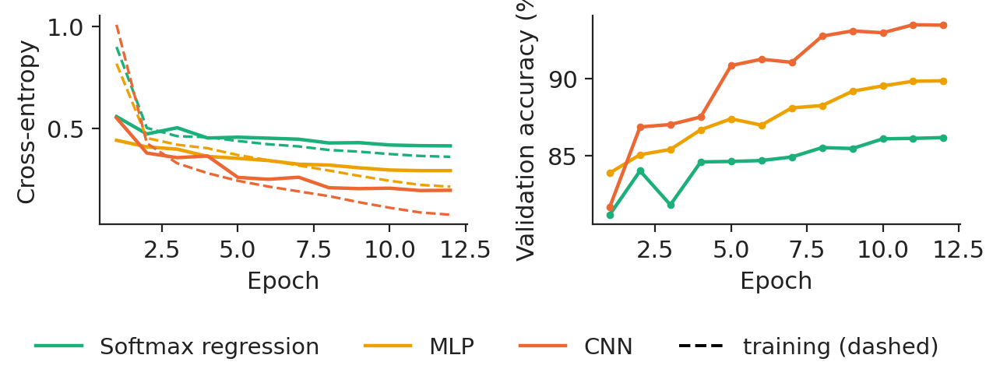
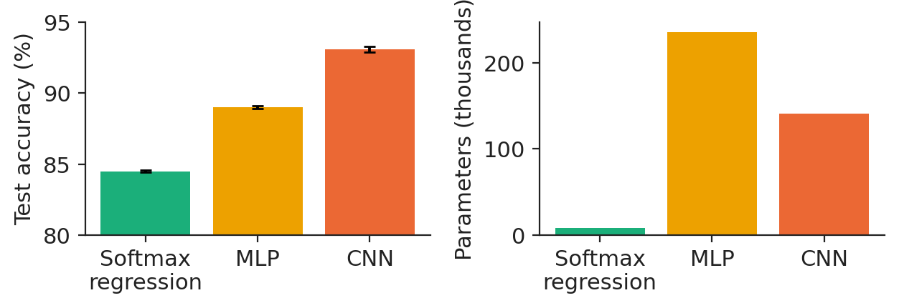
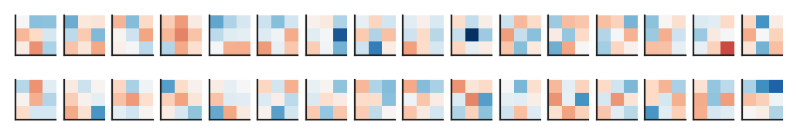
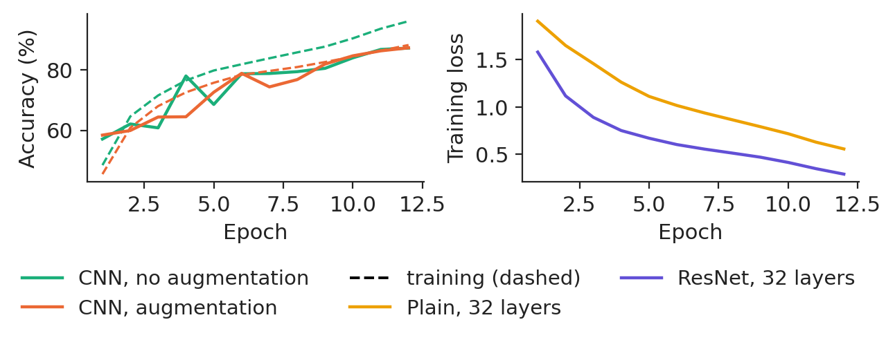
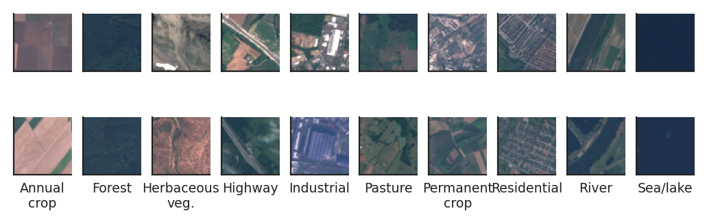
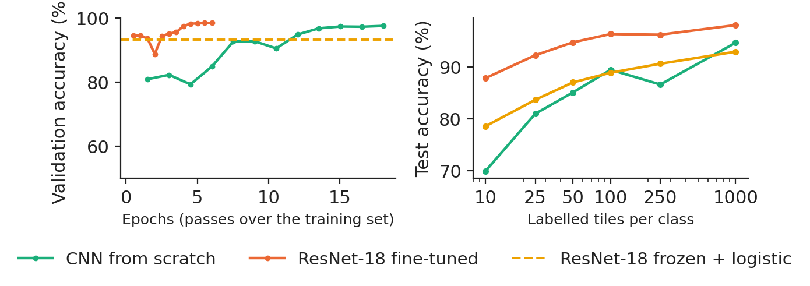
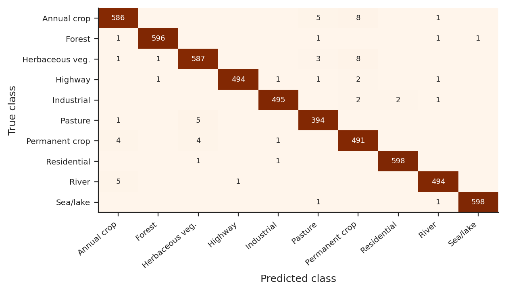

Lecture 4: Convolutional neural networks (CNN) and transfer learning
Lecture 4
Convolutional neural networks (CNN) and transfer learning
Prof. dr. Daniel Traian PELE
Bucharest University of Economic Studies (ASE), Department of Statistics and Econometrics Romanian Academy, Institute for Economic Forecasting (IPE)
A product photo, a satellite tile or a scanned document is a table of numbers, and a business that receives thousands of them a day wants a model to sort them. A multilayer perceptron (MLP), the network of Lectures 1 to 3, can take the pixels as inputs, but it treats neighbouring pixels as unrelated and needs one weight for every pixel and every hidden unit. A convolutional neural network (CNN) instead slides the same small filter over the whole image. It needs far fewer parameters, it recognises a pattern wherever it appears, and with a few layers it builds edges into parts and parts into objects.
This lecture writes the convolutional layer as a formula, trains three models on 50,000 real product photos from the Zalando catalogue, follows the classic architectures from LeNet to ResNet on the CIFAR-10 photographs of the Canadian Institute for Advanced Research (CIFAR), and ends with transfer learning on Sentinel-2 satellite images of land use (EuroSAT), the kind of data that agricultural lenders, insurers and real-estate investors use.
What you will be able to do
Write a convolutional layer as a formula: kernel, padding, stride, channels, parameters and receptive field.
Explain why a CNN needs far fewer parameters than an MLP on images, and verify it on real data.
Read the classic architectures and the residual connection that makes deep networks trainable.
Use transfer learning when labelled images are expensive, and measure what it saves.
Explain a prediction with a class activation map and turn image predictions into business numbers.
Architectures: from LeNet to ResNetLeNet-5 (1998) introduced convolution and subsampling for digits; AlexNet (2012) trained a deep CNN on graphics processors; the networks of the Visual Geometry Group (VGG, 2015) use only 3 × 3 kernels; ResNet (2016) added residual connections, which make networks of more than a hundred layers trainable.
Research from our groupThe multimodal vision–language framework for financial anomaly detection of Jheng, Pele, Tak and Găman (2026), Best Paper Award at the International Conference on Business Excellence (ICBE) 2026, projects market indicators onto a standardised multi-panel image and lets a vision–language model (GPT-4.1) classify market regimes, with rolling-quantile labels and structured natural-language rationales; out-of-sample tests on the S&P 500 show promising fidelity in detecting systemic anomalies.
Images as data: why convolutions
An image is a matrix of numbers, and the first question is how a model should look at it.
A product photo is a matrix of numbers
Each Fashion-MNIST image is a 28 × 28 array of grey levels from a product photo of the Zalando online catalogue, and the task is to assign it to one of ten product types. We keep 50,000 images for training, 10,000 for validation (early stopping) and 10,000 for the final test, which is used once.

Two training images of each of the ten product types.
Source: Fashion-MNIST, Zalando Research (Xiao et al., 2017). Data: 60,000 training images, 28 x 28 grey levels.
In practice: an online retailer tags thousands of new product photos a day; the classifier sets the category and a person checks only the doubtful ones.
A dense layer on pixels wastes parameters and ignores space
A dense layer computes \(\mathbf h=\sigma(\mathbf W\,\mathrm{vec}(\mathbf X)+\mathbf b)\) with one weight per pixel and unit. For a 224 × 224 colour image and 1,000 hidden units, that is about 150 million weights in the first layer alone. A CNN rests on three ideas: local connectivity (a unit sees a small patch), weight sharing (the same filter at every position) and equivariance (shifting the input shifts the feature map). On our data the MLP has 235,146 parameters and the CNN 140,778, 1.67 times fewer.
The convolutional layer, formula by formula
Convolution: the same small filter slides over the image
Each output value is a weighted sum of a \(k\times k\) neighbourhood in every input channel, plus a bias:
where \(X_c\) is input channel \(c\), \(K_{o,c}\) the kernel from channel \(c\) to output map \(o\), \(s\) the stride and \(p\) the zero padding. The result passes through a rectified linear unit (ReLU), \(\max(0,z)\). The kernels are learned by backpropagation.
Hand-made filters already find roads and field edges
Before learning anything, a fixed Sobel kernel shows what a filter does: it responds where the brightness changes along one direction. On a real Sentinel-2 tile of a highway, the vertical and horizontal edge filters pick out the road and the field borders, and the mean filter blurs the image. A CNN learns dozens of such kernels per layer instead of fixing them by hand.

A 64 × 64 Sentinel-2 tile (class Highway) and three fixed 3 × 3 kernels applied with padding 1.
Source: EuroSAT, Sentinel-2 images (Helber et al., 2019). Data: one 64 x 64 Sentinel-2 tile (class Highway), grey levels.
The output height is \(\lfloor (H_{\mathrm{in}}+2p-k)/s\rfloor+1\). For a 64-pixel input and a 3 × 3 kernel, padding 1 and stride 1 keep 64 pixels, no padding gives 62, and stride 2 halves the map to 32. A layer has \((k^2C_{\mathrm{in}}+1)C_{\mathrm{out}}\) parameters, whatever the image size.
Pooling, global pooling and the receptive field
Max pooling keeps the strongest response of each 2 × 2 window and halves the map; global average pooling (GAP) averages each channel to a single number, so the head of the network needs no large dense layer. The receptive field, the input patch that can influence one unit, grows as \(r_l=r_{l-1}+(k_l-1)\prod_{i<l}s_i\). Twelve 3 × 3 layers at stride 1 see only 25 × 25 pixels; eight layers with pooling after every pair see 68 × 68.

Receptive field as a function of depth, with and without pooling (own computation from the recursion).
Source: own computation from the receptive-field recursion. Data: recursion of the receptive field, no data.
Because the kernel is shared, its gradient sums the contributions of every position, \(\partial\mathcal L/\partial K_{o,c}(u,v)=\sum_{i,j}\delta_o(i,j)X_c(is+u-p,js+v-p)\), and the gradient with respect to the input is again a convolution. Every network of the lecture uses batch normalisation (BN) after each convolution: each channel is standardised over the batch and the positions, then rescaled by two learned numbers. At prediction time the running averages replace the batch statistics, which is why `model.eval()` must be called before predicting.
Case study: product photos, from softmax to CNN
Three models, one protocol
The benchmark is a softmax (multinomial logistic) regression with 7,850 parameters; the MLP has two hidden layers (256 and 128 units, 235,146 parameters); the CNN has two blocks of two 3 × 3 convolutions with batch normalisation and max pooling, a third convolution and global average pooling (140,778 parameters). All three are trained with the same optimiser (AdamW), batch size 128, 12 epochs and early stopping on the validation images, with three seeds each.

Training (dashed) and validation (solid) cross-entropy, and validation accuracy, by epoch (seed 20261108).
Source: Fashion-MNIST, Zalando Research (Xiao et al., 2017). Data: 50,000 training and 10,000 validation images; seed 20261108.
The CNN reaches a test accuracy of 93.08% (standard deviation over seeds 0.20), against 89.00% for the MLP and 84.50% for the softmax regression. It removes 37.1% of the MLP's errors with 1.67 times fewer parameters. McNemar's test on the same 10,000 test images (seed 20261108) counts 614 images right only for the CNN and 226 right only for the MLP, a statistic of 178.3, far above the 5% critical value of 3.84.

Test accuracy (mean and standard deviation over three seeds) and number of parameters.
Source: Fashion-MNIST, Zalando Research (Xiao et al., 2017). Data: 10,000 test images; mean and standard deviation over 3 seeds.
In practice: route only the low-confidence photos of the weak classes to a person: the cost of errors falls where it is highest.
What the network learns
The first-layer filters are small edge and contrast detectors, found by gradient descent without being asked for. Deeper layers combine them: the feature maps of block 1 keep the outline of the boot, those of block 3 are small (7 × 7) but mark where the informative parts are.

The 32 filters of 3 × 3 of the first convolutional layer (red positive, blue negative weights).
Source: Fashion-MNIST, Zalando Research (Xiao et al., 2017). Data: first convolutional layer of the CNN (32 filters of 3 x 3), seed 20261108.
LeNet-5 (1998) introduced convolution and subsampling for digits; AlexNet (2012) trained a deep CNN on graphics processors; the networks of the Visual Geometry Group (VGG, 2015) use only 3 × 3 kernels; ResNet (2016) added residual connections, which make networks of more than a hundred layers trainable.
Residual connections and data augmentation on CIFAR-10
A residual block adds its output to its input, \(\mathbf y=\mathrm{ReLU}(\mathbf x+F(\mathbf x))\), so the gradient always has a direct path back. Without it, deep plain networks suffer from degradation: a deeper network has a higher training error, which is an optimisation problem, not overfitting. On CIFAR-10, two 32-layer networks that differ only by the shortcut end with a training loss of 0.557 (plain) and 0.291 (residual), and test accuracies of 79.96% and 87.81%.
Data augmentation trains on random label-preserving transformations (crops after padding, horizontal flips). For the same small CNN and the same budget it moves the test accuracy from 86.56% to 86.86% and narrows the gap between training and validation accuracy from 8.9 to 0.9 points.

Left: the same CNN with and without augmentation (training dashed, validation solid). Right: training loss of plain and residual 32-layer networks.
Source: CIFAR-10 (Krizhevsky, 2009). Data: 45,000 training and 5,000 validation images; seed 20261108.
Satellite tiles for lenders, insurers and investors
EuroSAT has 27,000 Sentinel-2 tiles of 64 × 64 pixels in ten land-use classes. An agricultural lender can check that a farm loan finances crops; an insurer can map flood-exposed residential areas. Labelling tiles takes an expert's time, so the question is how few labels are enough.

Two training tiles of each of the ten land-use classes.
Source: EuroSAT, Sentinel-2 images (Helber et al., 2019). Data: 27,000 tiles of 64 x 64 pixels, 10 classes.
Transfer learning splits the network into a body \(\phi_{\omega}\), pre-trained on the ImageNet photographs, and a new head \(g_{\psi}\) with ten outputs. Feature extraction freezes the body and fits only the head (here a logistic regression on 512 features); fine-tuning trains all the weights, with a smaller learning rate for the body. The benchmark is a CNN trained from scratch on the same tiles. The split is stratified: 16,200 training, 5,400 validation and 5,400 test tiles.
With all labels, the CNN trained from scratch reaches 97.78% on the test tiles, the frozen ResNet-18 with a logistic head 93.48% and the fine-tuned ResNet-18 98.76%. With only 10 labelled tiles per class, the numbers are 69.9%, 78.6% and 87.8%: transfer matters most when labels are scarce.

Left: validation accuracy during training. Right: test accuracy against the number of labelled tiles per class (mean of two random draws).
Source: EuroSAT, Sentinel-2 images (Helber et al., 2019). Data: 16,200 training, 5,400 validation, 5,400 test tiles; right: mean of 2 seeds.
In practice: labelling a tile costs an expert's minute; transfer learning turns weeks of labelling into an afternoon.
Remaining errors and explanations
The fine-tuned network makes 67 errors on 5,400 test tiles (macro-F1 98.72%); the largest confusion is Annual crop taken for Permanent crop (8 tiles). Gradient-weighted class activation mapping (Grad-CAM) shows where a decision comes from: each feature map is weighted by the mean gradient of the class score, \(M^c=\mathrm{ReLU}(\sum_o\alpha_o^cA_o)\).

Confusion matrix of the fine-tuned ResNet-18 on the test tiles.
Source: EuroSAT, Sentinel-2 images (Helber et al., 2019). Data: 5,400 test tiles, fine-tuned ResNet-18, seed 20261108.
A portfolio question is about shares, not single tiles. On the test tiles, crops (annual and permanent) make 20.37% of the tiles and the model predicts 20.54%; the largest error of any class share is 0.20 percentage points. Before using the model in a new region or season, label a small sample there and measure again.
Research from our group
The multimodal vision–language framework for financial anomaly detection of Jheng, Pele, Tak and Găman (2026), Best Paper Award at the International Conference on Business Excellence (ICBE) 2026, projects market indicators onto a standardised multi-panel image and lets a vision–language model (GPT-4.1) classify market regimes, with rolling-quantile labels and structured natural-language rationales; out-of-sample tests on the S&P 500 show promising fidelity in detecting systemic anomalies. Every chart of this lecture is published as a reproducible Quantlet, on the platform described by Găman, Winkel, Zuo, Härdle and Pele (2026).
Section summary
A convolution is a shared local filter. On real images it beats a dense network with fewer parameters, residual connections make depth trainable, augmentation is free data, and transfer learning wins when labels are scarce. Lecture 5 moves from space to time, with recurrent networks.
Videos: the intuition behind the mathematics (in English)
Canadian Institute for Advanced Research (CIFAR-10 image set)
CNN
convolutional neural network
CPU
central processing unit
EU
European Union
GAP
global average pooling
GPT
generative pre-trained transformer
GPU
graphics processing unit
ICBE
International Conference on Business Excellence
IPE
Institute for Economic Forecasting, Romanian Academy
MLP
multilayer perceptron
MNIST
Modified National Institute of Standards and Technology (digit images)
MPS
Metal Performance Shaders (Apple GPU back end of PyTorch)
ReLU
rectified linear unit
RGB
red, green, blue (colour channels)
SGD
stochastic gradient descent
VGG
Visual Geometry Group, University of Oxford
VLM
vision–language model
References
Bishop, C. M. & Bishop, H. (2024). Deep Learning: Foundations and Concepts, ch. 10. Springer. doi:10.1007/978-3-031-45468-4
Goodfellow, I., Bengio, Y. & Courville, A. (2016). Deep Learning, ch. 9. MIT Press. deeplearningbook.org
He, K., Zhang, X., Ren, S. & Sun, J. (2016). Deep residual learning for image recognition. CVPR, 770–778. doi:10.1109/CVPR.2016.90
Helber, P., Bischke, B., Dengel, A. & Borth, D. (2019). EuroSAT: A novel dataset and deep learning benchmark for land use and land cover classification. IEEE JSTARS, 12(7), 2217–2226. doi:10.1109/JSTARS.2019.2918242
Ioffe, S. & Szegedy, C. (2015). Batch normalization: Accelerating deep network training by reducing internal covariate shift. ICML, PMLR 37, 448–456. arXiv:1502.03167
Jheng, S.-L., Pele, D. T., Tak, R. & Găman, Ș. (2026). A multimodal vision-language framework for financial anomaly detection. Proceedings of the International Conference on Business Excellence, 20(1), 191–201. doi:10.2478/picbe-2026-0020
Găman, Ș., Winkel, J., Zuo, X., Härdle, W. K. & Pele, D. T. (2026). Quantlet: the code snippet knowledge platform. Computational Statistics, 41(3), 66. doi:10.1007/s00180-026-01742-6
Krizhevsky, A. (2009). Learning multiple layers of features from tiny images. Technical report, University of Toronto. cs.toronto.edu
Krizhevsky, A., Sutskever, I. & Hinton, G. E. (2012). ImageNet classification with deep convolutional neural networks. NIPS, 25, 1097–1105. doi:10.1145/3065386
LeCun, Y., Bottou, L., Bengio, Y. & Haffner, P. (1998). Gradient-based learning applied to document recognition. Proceedings of the IEEE, 86(11), 2278–2324. doi:10.1109/5.726791
McNemar, Q. (1947). Note on the sampling error of the difference between correlated proportions or percentages. Psychometrika, 12(2), 153–157. doi:10.1007/BF02295996
Selvaraju, R. R., Cogswell, M., Das, A., Vedantam, R., Parikh, D. & Batra, D. (2017). Grad-CAM: Visual explanations from deep networks via gradient-based localization. ICCV, 618–626. doi:10.1109/ICCV.2017.74
Simonyan, K. & Zisserman, A. (2015). Very deep convolutional networks for large-scale image recognition. ICLR. arXiv:1409.1556
Xiao, H., Rasul, K. & Vollgraf, R. (2017). Fashion-MNIST: A novel image dataset for benchmarking machine learning algorithms. arXiv:1708.07747
Yosinski, J., Clune, J., Bengio, Y. & Lipson, H. (2014). How transferable are features in deep neural networks? NIPS, 27, 3320–3328. arXiv:1411.1792
Zeiler, M. D. & Fergus, R. (2014). Visualizing and understanding convolutional networks. ECCV, 818–833. doi:10.1007/978-3-319-10590-1_53
Text written for the web version of the lecture; numbers, charts and sources come from the slides and their Quantlets.